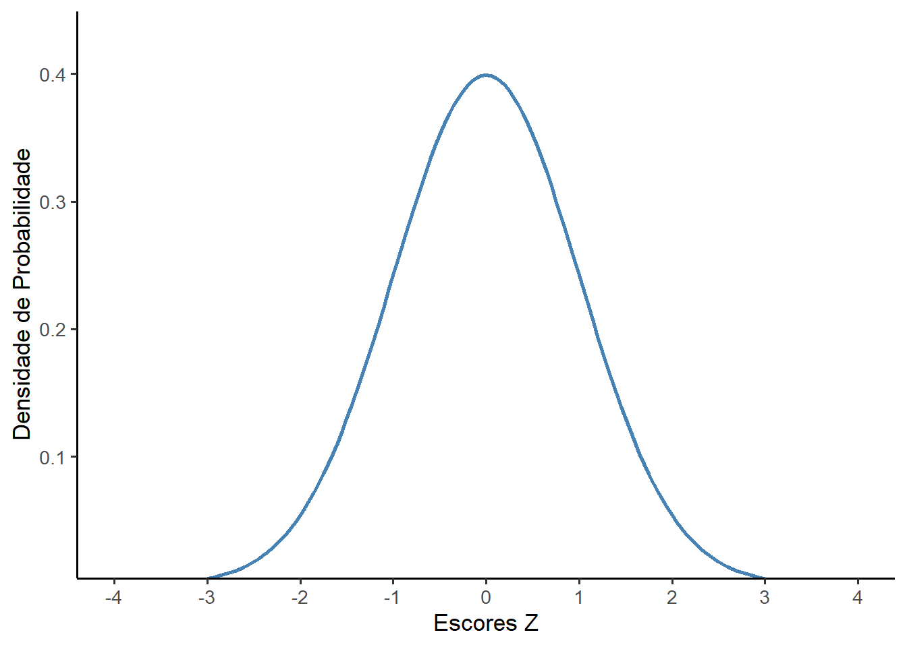
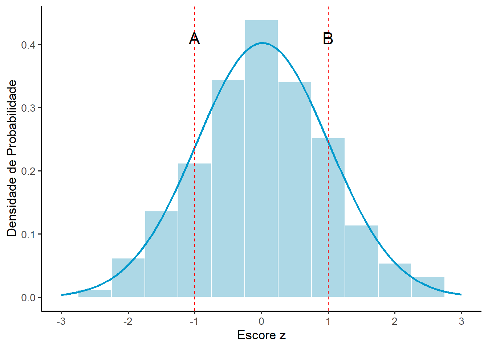
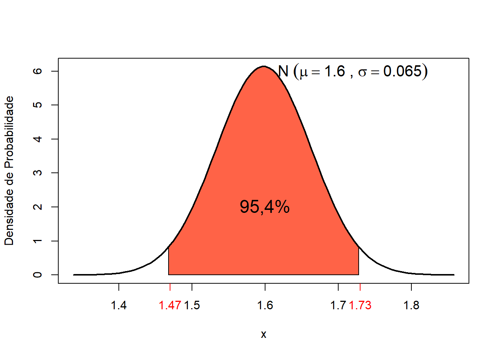
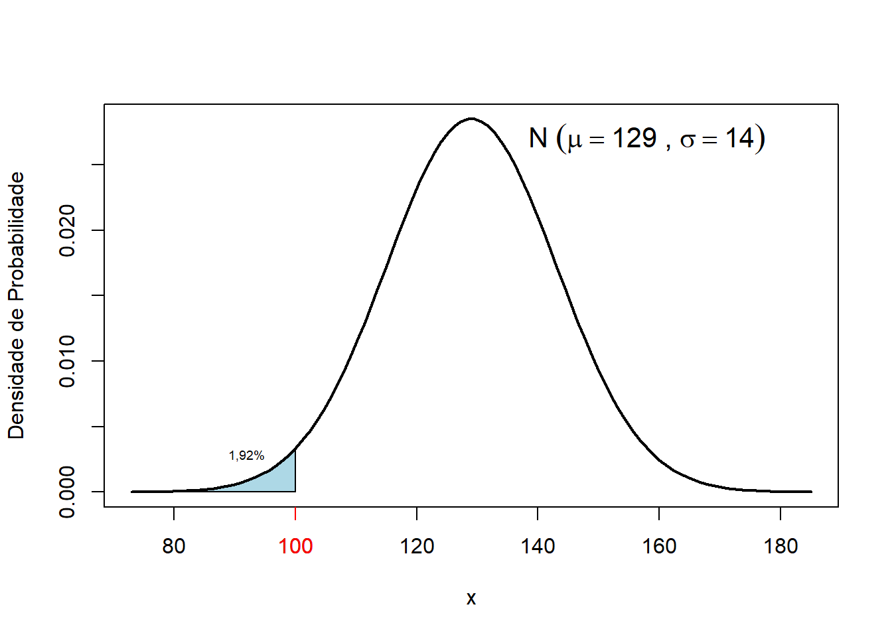
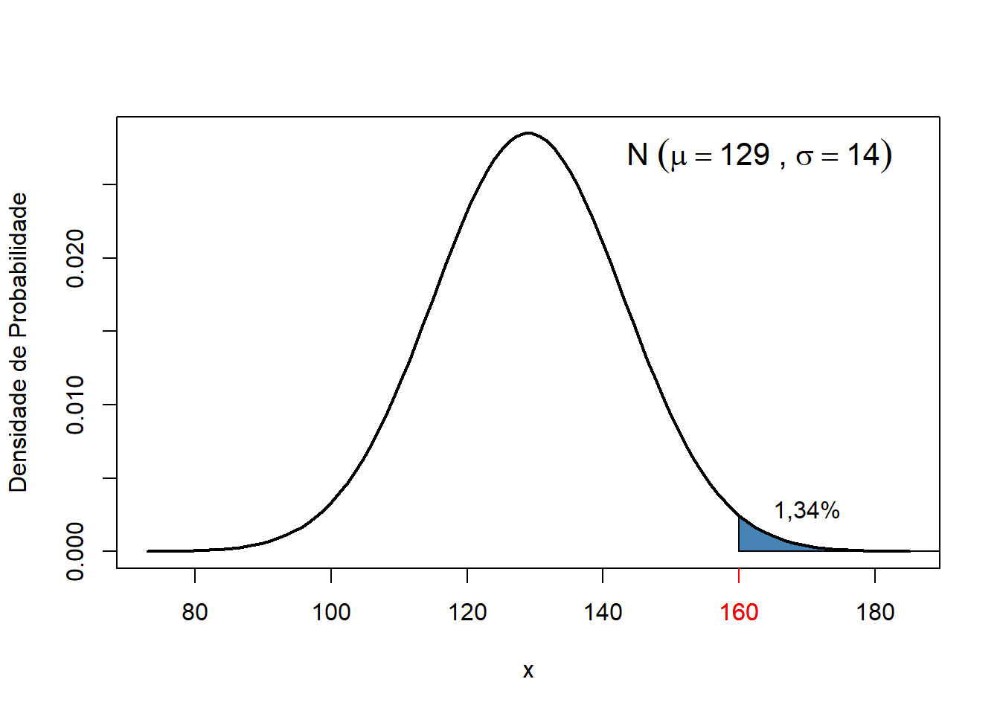

pacman::p_load(dplyr, readxl, scales, ggplot2)9 Introdução à Teoria das Probabilidades
9.1 Pacotes necessários neste capítulo
9.2 Introdução
A teoria das probabilidades é a base sobre a qual a estatística é desenvolvida. Os jogos de azar deram um grande impulso ao conhecimento da moderna teoria das probabilidades, principalmente, pelo trabalho de Blaise Pascal (1623-1662), em parceria com Pierre de Fermat (1601-1665). Eles foram estimulados por um escritor francês e matemático amador, Antoine Gombaud (1607-1684), conhecido como Chevalier de Méré, que era muito interessado em jogos de azar (Debnath e Basu 2015).
A Teoria das probabilidades permite que seja possível modelar populações, experimentos ou qualquer situação que possa ser considerada aleatória. Estes modelos possibilitam fazer inferência sobre populações a partir da observação de uma amostra dessa população. Ao usar apenas uma parte da população, inevitavelmente, é cometido um erro, o erro amostral. Este erro amostral pode ser dimensionado pela teoria das probabilidades.
Existem duas interpretações alternativas de probabilidades: a frequentista e a bayesiana (Menezes 2004). Neste livro, será discutida, basicamente, a definição de probabilidade frequentista. O processo bayesiano de formulação de um modelo probabilístico faz uso do conhecimento subjetivo, estabelecendo uma especificação a priori, combinado com a informação objetiva ou empírica. A teoria bayesiana é a estrutura integradora dessas duas fontes de informação, derivando como resultado a distribuição a posteriori dos parâmetros de interesse. Na Seção 21.2, sobre análise de testes diagnósticos, serão abordados alguns aspectos relacionados à teoria bayesiana em medicina.
9.3 Processo aleatório
Um processo ou experimento é dito aleatório quando em uma situação se sabe quais os resultados que podem acontecer, mas não se sabe qual resultado particular irá acontecer. Por exemplo, quando uma moeda é lançada, se conhece que a probabilidade de o desfecho cara ocorrer é de 50%, mas se desconhece o que irá ocorrer até que a moeda esteja no chão.
O número de caras que podem surgir em vários lançamentos da moeda é chamado de variável aleatória, ou seja, uma variável que pode assumir mais de um valor com determinadas probabilidades (Pagano e Kimberly 2000). Da mesma forma, um dado lançado pode mostrar seis faces, numeradas de um a seis, com igual probabilidade de 16,7%. Portanto, quando a probabilidade é associada a todos os conjuntos de valores possíveis de uma variável, diz-se que ela é aleatória. O conjunto de todos os possíveis resultados de um experimento aleatório é denominado espaço amostral.
Na área da saúde, trabalha-se com uma infinidade de variáveis aleatórias, por exemplo, o número de filhos de uma mulher, o número de mortos diários em uma epidemia, o número de vacinados em uma campanha, etc. Essas variáveis são variáveis aleatórias discretas, pois apenas permitem ser quantificadas por processo de contagem. Por outro lado, o peso ou a altura de uma mulher são ditos variáveis aleatórias contínuas, pois podem assumir qualquer valor real entre uma medida e outra, dependendo da precisão do aparelho usado.
Em geral, variáveis aleatórias são representadas por letras maiúsculas, como X, Y e Z e sua a probabilidade, por exemplo, pode ser denotada por: \(P(X)\).
9.4 Definição frequentista
A probabilidade se relaciona a eventos futuros ou que ainda não ocorreram, desta forma a probabilidade pode ser entendida como uma medida de incerteza em relação ao evento. A probabilidade de um evento ocorrer, em determinadas circunstâncias, pode ser definida como a proporção de vezes que o evento é observado quando o experimento é repetido um número infinitamente grande de vezes (Menezes 2004). Pode-se dizer que a visão frequentista define a probabilidade como uma frequência de longo prazo.
A chamada Lei dos Grandes Números diz que à medida que múltiplas observações são coletadas, a proporção observada de ocorrências de um determinado desfecho, após n ensaios, converge para a probabilidade real P desse desfecho. Ou seja, quanto mais vezes for repetido uma experiência, a melhor estimativa de probabilidade tende a ocorrer. Suponha que seja lançada uma moeda honesta repetidas vezes. Por definição, essa é uma moeda que tem \(P(cara)=0,5\). O que se observaria? O autor fez 20 lançamentos seguidos com uma mesma moeda e obteve o seguinte resultado, onde 1 = cara (Figura 9.1):

Neste caso, 10 (50%) desses lançamentos deram cara. Agora, suponha que foram feitos registros do número de caras (\(n_1\)) dos primeiros lançamentos (N) e calculadas as proporções de caras (\(n_1⁄N\)) todas as vezes. O resultado está na Figura 9.2.

Observa-se, nessa sequência, que a proporção de caras flutua muito, variando de 0,17 a 0,75. Se o número de lançamentos for aumentando tem-se a sensação de que a proporção se aproxima da “correta”. Por exemplo, com 100 jogadas, obteve-se 53 caras (0,53); com 150 jogadas, 79 (0,53) e com 200 jogadas, 111 (0,56). Quando N se aproximar do infinito (\(N \to\infty\)) a proporção de caras convergirá para 0,50. A definição frequentista de probabilidade segue essa definição. Ninguém consegue um número infinito de lançamentos de moedas, mas um computador pode simular milhares de lançamentos. A Figura 9.3 mostra o que acontece com a proporção \(n_1⁄N\) à medida que N aumenta em lançamentos de moedas. As simulações foram repetidas 4 vezes somente para ter certeza de que o que aconteceu não foi obra do acaso.

Embora nenhuma das simulações tenha realmente terminado com um valor exato de 0,5, elas se aproximaram, oscilando muito pouco em torno desse valor.
9.4.1 Aplicando a visão frequentista no dia a dia
A definição frequentista também pode ser aplicada no cotidiano. Utilizando a altura de 1368 mulheres, uma medida numérica contínua, incluída no conjunto de dados dadosMater.xlsx (veja Seção 5.6). Essas alturas serão selecionadas e colocadas em um objeto, denominado dados.
dados <- read_excel("dados/dadosMater.xlsx") %>%
select(altura)Usando a função summary(), será feito um resumo da variável altura:
summary(dados$altura) Min. 1st Qu. Median Mean 3rd Qu. Max.
1.400 1.550 1.600 1.598 1.650 1.850 A mediana da altura das gestantes é 1.6 m. Em um longo conjunto de sorteios, a probabilidade de uma mulher ter altura acima devalor é 50%. O percentil 75 (3º quartil) é igual a 1.65 m, a probabilidade de estar acima deste valor, portanto, é 25%. É possível encontrar a probabilidade de a altura estar acima, abaixo ou entre quaisquer valores. Quando se faz a mensuração de uma variável contínua, fica-se limitado ao método usado. Portanto, quando se diz que uma mulher tem 160 cm, significa dizer que está entre 159,5 e 160,5 cm, dependendo da precisão do instrumento de medição. Dessa maneira, o interesse está na probabilidade de a variável aleatória assumir valores entre certos limites.
A probabilidade de encontrar um valor exatamente igual à média (159.8) cm é quase igual a zero. Como se verá a seguir, isto pode ser verificado, no R, com bastante facilidade,calculando a distância que esta medida está da média em número de desvios padrão (escore Z):
Z <- (1.60 - mean(dados$altura))/sd(dados$altura)
Z[1] 0.03103551Observe que o valor de 1,60 m está muito próximo da média e isto é um indicativo de que essa variável tem uma distribuição praticamente simétrica. Sabendo a distância, em números de desvios padrão, que 1,60 m está da média, qual a probabilidade de encontrar, na maternidade do HGCS 1, uma parturiente que tenha exatamente esta altura?
Para responder a essa pergunta, será usada a função pnorm() (veja Seção 9.7.2) que utiliza o escore Z, a média e o desvio padrão para encontrar essa proporção que, multiplicada por 100, fornece a percentagem.
p <- pnorm (Z, mean(dados$altura),sd(dados $altura))
p[1] 7.387473e-127O R por padrão retorna números grandes como notação científica. O resultado dessa operação é um número tão grande que para escrevê-lo sem este tipo de notação, seriam necessários 127 dígitos decimais. O resultado não caberia em apenas uma linha. Ficaria assim, suprimindo a notação científica 2:
options(scipen =999)
p[1] 0.0000000000000000000000000000000000000000000000000000000000000000000000000000000000000000000000000000000000000000000000000000007387473 options(scipen = 0)Ou seja, um número tão próximo de zero que poderia muito bem ser zero!
9.5 Propriedades das probabilidades
As seguintes propriedades simples decorrem da definição de probabilidade.
Sendo E um evento aleatório, a \(P[E]\) está entre 0 e 1, ou seja \(0\le P[E]\le 1\). Quando o evento certamente não ocorre, a probabilidade é 0, quando sempre ocorre a probabilidade é 1. Quando a probabilidade for igual a 0,50 tem-se máxima incerteza.
- Regra de adição (regra do “ou”)
Dois eventos A e B são mutuamente exclusivos, ou seja, quando A acontece, B não pode acontecer. Então, a probabilidade de que um ou outro aconteça é a soma de suas probabilidades. Por exemplo, um dado lançado pode mostrar um ou dois, mas não ambos. A probabilidade de mostrar um ou dois é igual a \(1/6 + 1/6 = 1/3\).
\[ P[A ou B]=P[A]+P[B] \]
Se A e B não são mutuamente exclusivos, ou seja, quando A acontece pode também ocorrer B. Por exemplo, o nascimento de uma menina pode ser concomitante com o fato de ser branca.
\[ P[A ou B]=P[A]+P[B]-P[A \space e \space B] \]
- Regra de multiplicação (regra do “e”)
Suponha que dois eventos (A e B) sejam independentes, ou seja, saber que um aconteceu não nos diz nada sobre se o outro aconteceu. Então, a probabilidade de que ambos aconteçam é o produto de suas probabilidades. Por exemplo, suponha que jogamos duas moedas. Uma moeda não influencia a outra, portanto os resultados dos dois lançamentos são independentes e a probabilidade de ocorrerem duas caras é 050 × 0,50 = 0,25.
\[ P[A \quad e\quad B]=P[A]×P[B] \]
Se os eventos são dependentes, a probabilidade que ambos aconteçam é igual a:
\[ P[A \quad e \quad B]=P[A]×P[B \rvert A] \] Com essas propriedades simples e outras mais complexas, é possível construir algumas ferramentas matemáticas extremamente poderosas, mas isso não faz parte do objetivo deste livro e não se entrará em detalhes.
9.6 Distribuição de Probabilidades
Um conjunto de eventos que são mutuamente excludentes e que inclui todos os eventos que podem acontecer, é chamado de exaustivo. A soma de suas probabilidades é 1. O conjunto dessas probabilidades constitui uma distribuição de probabilidade.
Existem diversos modelos probabilísticos que procuram descrever vários tipos de variáveis aleatórias discretas ou contínuas. Estas distribuições também são chamadas de modelos probabilísticos estocásticos que são definidas por duas funções matemáticas: a função de probabilidade (fp) para variáveis discretas, que atribui a cada valor a sua probabilidade de ocorrência (P(X=x)) e função densidade de probabilidade (fdp) para variáveis contínuas.
A função de probabilidade é a função que atribui probabilidades a cada um dos possíveis valores da variável aleatória discreta, usando, em geral, as frequências relativas, apresentadas em uma tabela de frequência. O modelo de Bernoulli ou Binomial e o modelo de Poisson são exemplos de modelo probabilístico de variáveis discretas.
A função densidade de probabilidade é a função que atribui probabilidade a qualquer intervalo de número reais, ou seja, um conjunto de valores não enumerável (infinito). Não é possível atribuir probabilidades para um determinado valor, é possível apenas para um intervalo. Por exemplo, o peso dos recém-nascidos. Para atribuir probabilidade a intervalos de valores é utilizada uma função e as probabilidades são representadas por áreas. Existem diversos modelos contínuos de probabilidade, mas o mais importante deles, é o modelo normal, também conhecido como modelo gaussiano.
9.7 Distribuição Normal
O modelo probabilístico normal ou gaussiano é extremamente importante em estatística, pois serve como um fundamento para técnicas de inferência. Variáveis como os pesos dos recém-nascidos a termo, as alturas das mulheres adultas, a renda familiar em reais e muitas outras variáveis, na natureza, se ajustam ao modelo da distribuição normal.
O modelo de distribuição normal sempre descreve uma curva simétrica, unimodal e em forma de sino (Figura 9.4).

Uma distribuição normal é descrita por meio de dois parâmetros: a média da distribuição \(\mu\) e o desvio padrão da distribuição \(\sigma\). Em função dessa informação, observe como a distribuição normal funciona se esses parâmetros forem alterados.
Como é fácil prever, alterar a média desloca a curva de sino para a esquerda ou para a direita, enquanto a alteração do desvio padrão estende ou achata a curva, ou seja, muda a dispersão da distribuição.
A Figura 9.5, mostra a distribuição normal com média 0 e desvio padrão 1, na curva à direita, a distribuição normal com média 1.5 e desvio padrão 1. Sobrepondo-se à curva da esquerda observa-se uma curva mais achatada (verde) que tem média 0 e desvio padrão 1.5. Observa-se, como mencionado, que modificando os parâmetros da curva, altera-se a posição ou o formato da mesma.

9.7.1 Características da distribuição normal
A curva normal apresenta as seguintes características:
A média e o desvio padrão descrevem exatamente uma distribuição normal, eles são chamados de parâmetros da distribuição. Se uma distribuição normal tem média \(\mu\) e desvio padrão \(\sigma\), pode-se escrever a distribuição como \(N (\mu,\sigma)\). As três distribuições dos gráficos da Figura 9.5 podem ser escritas como:
- Curva azul \(\to\) \(N(\mu = 0,\sigma = 1)\)
- Curva verde \(\to\) \(N(\mu = 0,\sigma = 1.5)\)
- Curva vermelha \(\to\) \(N(\mu = 1.5,\sigma = 1)\)
Na distribuição normal, a média, a mediana e a moda coincidem.
A curva normal é simétrica em torno da média (\(\mu\)).
As extremidades da curva, em ambos os lados da média, se estendem cada vez mais próximas do eixo x (abscissa) sem jamais tocá-lo. É assintótica.
Os pontos de inflexão da curva são \(\mu - \sigma\) e \(\mu + \sigma\).
A área total sob a curva é 1 ou 100%.
9.7.2 Distribuição normal padronizada
Cada variável aleatória contínua tem a sua média e seu desvio padrão e, portanto, a sua curva normal correspondente.
Para facilitar a comparação entre variáveis, foi criado o conceito de curva normal padronizada, que é uma curva normal com média 0 e desvio padrão 1. A distribuição normal padrão também pode ser chamada de distribuição normal centrada ou reduzida.
Para calcular probabilidades associadas a distribuição normal, costuma-se converter a variável aleatória original X, em unidades reduzidas ou padronizadas, denominadas de escore Z ou escore padrão. Essa transformação é realizada pela equação que indica o número de desvios padrão envolvidos no afastamento do valor x em relação à média da população:
\[ Z =\frac{x-\mu}{\sigma} \] onde:
- Z \(\to\) escore Z
- x \(\to\) valor qualquer da variável aleatória X
- \(\mu\) \(\to\) média da variável X
- \(\sigma\) \(\to\) desvio padrão da variável X
Qualquer distribuição de uma variável aleatória normal pode ser padronizada, usando o escore Z. Isto permite que se calcule a probabilidade de se encontrar determinados intervalos de valores (Gonzalez 2021).
Como exemplo, se retornará à altura das mulheres. É, praticamente, impossível saber o valor da média populacional, por isso. costuma-se usar a média aritmética como um estimador da média populacional. Dessa forma, a variável dados$altura poderá utilizada com estimativa da média populacional. Em primeiro lugar, se construirá um tibble de nome resumo:
resumo <- dados %>%
dplyr::summarise(n = n(),
media = mean(altura, na.rm = TRUE),
dp = sd(altura, na.rm = TRUE),
min = min(altura, na.rm = TRUE),
max = max(altura, na.rm = TRUE))
resumo# A tibble: 1 × 5
n media dp min max
<int> <dbl> <dbl> <dbl> <dbl>
1 1368 1.60 0.0655 1.4 1.85Assim, pode-se verificar quantos desvios padrão uma mulher, pertencente a essa amostra, com 1,725m está afastada da média:
Z <- (1.725 - resumo$media)/resumo$dp
round(Z, 2)[1] 1.94Esta mulher está distante praticamente 2 desvios padrão acima da média da sua população. Portanto, ela é considerada alta. Por que?
Para responder a essa pergunta, há necessidade de calcular a probabilidade de encontrar uma mulher com esta altura, nesta população. Primeiro, calcula-se a probabilidade de encontrar uma mulher com esta altura, nesta amostra. No R, existem as funções dnorm(), pnorm() e qnorm(), que permitem calcular a densidade de probabilidade, a distribuição cumulativa e a função quantílica da distribuição normal para um conjunto de valores. Além dessas, há a função rnorm() que permite obter observações aleatórias que seguem uma distribuição normal (Jain 2022).
9.7.2.1 Função pnorm()
A função pnorm() fornece a Função de Distribuição Cumulativa (CDF) da distribuição Normal, que é a probabilidade de que a variável X contenha um valor menor ou igual a x.
Argumentos:
- q \(\rightarrow\) vetor de quantis
- mean \(\rightarrow\) média
- sd \(\rightarrow\) desvio padrão
- lower.tail \(\rightarrow\) Se
TRUE, as probabilidades são \(P(X\le x)\), caso contrário \(P(X > x)\)
Se for usado \(mean = 0\) e \(sd = 1\), o valor de q = Z, caso contrário, toma-se os valores da média, o desvio padrão da população e o valor de x. Com esta função, é possível responder a pergunta feita anteriormente em relação a probabilidade de encontrar uma mulher com mais de 1,725m, equivalente a 1.94 desvios padrão acima da média, em uma população com média = 1.5979678 e desvio padrão = 0.0654787.
p <- pnorm(Z, mean = 0, sd = 1, lower.tail = FALSE)
p[1] 0.02618654Ou, usando os valores:
pnorm(1.725, mean = resumo$media, sd = resumo$dp, lower.tail = FALSE)[1] 0.02618654Observa-se que, nesta amostra, apenas 2.6% das mulheres têm acima de 1,725m, razão de ser considerada uma mulher alta. Ou seja, é pouco provável encontrar mulheres acima dessa altura, nesta amostra.
Para representar graficamente essa pequena probabilidade, será construída uma curva com essa pequena área sombreada, colorida em azul claro. Para isso, uma função própria, denominada normal_intervalo_sombreado() plotará a figura. Os argumentos dessa função são: a = limite inferior do intervalo; b = limite superior do intervalo; mean = média (padrão = 0); sd = desvio padrão (padrão = 1). Ela pode ser obtida aqui para ser baixada em seu diretório de trabalho para uso posterior 3. Para carregar a função para uso usa-se a função nativa source() que serve para executar o código contido em um arquivo com a extensão .R.
A Figura 9.6 representa com clareza esta pequena probabilidade.

9.7.2.2 Função qnorm()
A função qnorm() permite encontrar o quantil q para qualquer probabilidade p. Portanto, a função qnorm é o inverso da função pnorm().
Argumentos:
- p \(\to\) vetor de probabilidades
- mean \(\to\) média
- sd \(\to\) desvio padrão
- lower.tail \(\to\) Se
TRUE, as probabilidades são (\(P \le x\)), caso contrário \(P(X > x)\)
No exemplo anterior, a probabilidade de se encontrar mulheres, na maternidade, com mais de 1,725m foi de 2.6%. Poderia ser calculado com a função qnorm() qual o escore Z correspondente:
qnorm(p, mean = 0, sd = 1, lower.tail = FALSE)[1] 1.9400549.7.2.3 Função dnorm()
Essa função retorna o valor da função de densidade de probabilidade (pdf) da distribuição normal dada uma certa variável aleatória X, uma média populacional \(\mu\) e o desvio padrão populacional \(\sigma\).
Argumentos:
- x \(\to\) vetor de quantis
- mean \(\to\) média
- sd \(\to\) desvio padrão
Embora x represente a variável independente da pdf para a distribuição normal, também é útil pensar em x como um escore Z. Por exemplo, a densidade de probabilidade quando x = 0 é igual:
dnorm(x = 0, mean = 0, sd = 1)[1] 0.3989423Para se construir uma curva de densidade de probabilidades normal ( \(X \sim N(μ=0,σ=1)\)), basta aplicar a função dnorm() a uma sequência contínua de escores Z. O vetor de escores Z é obtido com a função seq(), como mostrado a seguir:
escores_z <- seq(-3,3, by = 0.05)
escores_z [1] -3.00 -2.95 -2.90 -2.85 -2.80 -2.75 -2.70 -2.65 -2.60 -2.55 -2.50 -2.45
[13] -2.40 -2.35 -2.30 -2.25 -2.20 -2.15 -2.10 -2.05 -2.00 -1.95 -1.90 -1.85
[25] -1.80 -1.75 -1.70 -1.65 -1.60 -1.55 -1.50 -1.45 -1.40 -1.35 -1.30 -1.25
[37] -1.20 -1.15 -1.10 -1.05 -1.00 -0.95 -0.90 -0.85 -0.80 -0.75 -0.70 -0.65
[49] -0.60 -0.55 -0.50 -0.45 -0.40 -0.35 -0.30 -0.25 -0.20 -0.15 -0.10 -0.05
[61] 0.00 0.05 0.10 0.15 0.20 0.25 0.30 0.35 0.40 0.45 0.50 0.55
[73] 0.60 0.65 0.70 0.75 0.80 0.85 0.90 0.95 1.00 1.05 1.10 1.15
[85] 1.20 1.25 1.30 1.35 1.40 1.45 1.50 1.55 1.60 1.65 1.70 1.75
[97] 1.80 1.85 1.90 1.95 2.00 2.05 2.10 2.15 2.20 2.25 2.30 2.35
[109] 2.40 2.45 2.50 2.55 2.60 2.65 2.70 2.75 2.80 2.85 2.90 2.95
[121] 3.00Agora, usando a função dnorm(), será construído conjunto de valores de densidade de probabilidade correspondentes aos escores Z obtidos anteriormente:
valores_d <- dnorm(escores_z, mean = 0, sd = 1)Estes valores serão plotados para construir a curva normal (Figura 9.7):

Os argumentos básicos a serem informados da função axis() são: side=, at= e labels=. Esses argumentos determinam qual eixo será preenchido, qual a posição dos valores no eixo e a sequência de valores a ser preenchida, respectivamente. O argumento side= recebe valores que vão de 1 a 4: 1 = eixo inferior, 2 = eixo lateral esquerdo, 3 = eixo superior, 4= eixo lateral direito. Ou seja, partindo do eixo inferior (eixo x), os valores aumentam até 4 seguindo o sentindo horário para os quatros lados do gráfico. No exemplo, foi modificado o eixo x, logo side = 1. O argumento at = estabelece os pontos (densidades de probabilidade) do eixo x que receberão os rótulos, especificados no argumento label =.
Como se pode ver, dnorm() fornece a “altura” do pdf da distribuição normal em qualquer escore Z que se forneça como argumento.
9.7.2.4 Função rnorm()
A função rnorm() gera n números aleatórios com distribuição normal com média \(\mu\) e desvio padrão \(\sigma\).
Argumentos:
- n \(\to\) número de observações a serem geradas
- mean \(\to\) média
- sd \(\to\) desvio padrão
Com esta função é possível, por exemplo, gerar 10 observações de uma distribuição normal:
rnorm(10) [1] -0.82948264 -2.07087155 1.61373891 -0.65597468 -1.92658708 0.05687942
[7] -0.33220699 -0.80301895 0.31804927 -2.31707086No entanto, deve-se notar que, se uma “semente” (seed) não for especificada, a saída não será reproduzível, ou seja, cada vez que o comando for executado, retornará um novo conjunto de observações:
rnorm(10) [1] 0.123937772 -1.768075089 0.143984241 1.103435514 -0.258556163
[6] -0.783556573 -1.502900318 -1.932686151 -0.006632923 -1.344596996Cada vez que este comando for reproduzido, retornará uma nova série de 10 números diferentes do anterior. Para tornar o código reproduzível, retornando o mesmo conjunto de valores, deve-se usar uma “semente” (seed), usando a função set.seed(), cujo argumento é um número que identificará a série gerada, no exemplo, pela função rnorm(). O valor do número (“semente”) não é importante, é apenas um identificador. Para ilustrar, será construído dois conjuntos de 10 números que serão recebidos pelos objetos x e y. Para gerar o conjunto de números x, será usado o número 123 como “semente”. A “semente” funciona como uma espécie de marca. Para o y não será usado a função set.seed():
n <- 10
set.seed (123)
x <- rnorm (n)
x [1] -0.56047565 -0.23017749 1.55870831 0.07050839 0.12928774 1.71506499
[7] 0.46091621 -1.26506123 -0.68685285 -0.44566197y <- rnorm(n)
y [1] 1.2240818 0.3598138 0.4007715 0.1106827 -0.5558411 1.7869131
[7] 0.4978505 -1.9666172 0.7013559 -0.4727914Comparando os conjuntos com a função identical() do R base, observa-se que os conjuntos são diferentes:
identical(x, y)[1] FALSEAgora, repetindo os mesmos comandos, mas usando antes a mesma “semente”, observa-se que os conjuntos são idênticos.
set.seed (123)
x <- rnorm (n)
x [1] -0.56047565 -0.23017749 1.55870831 0.07050839 0.12928774 1.71506499
[7] 0.46091621 -1.26506123 -0.68685285 -0.44566197set.seed (123)
y <- rnorm(n)
y [1] -0.56047565 -0.23017749 1.55870831 0.07050839 0.12928774 1.71506499
[7] 0.46091621 -1.26506123 -0.68685285 -0.44566197identical(x, y)[1] TRUEOutros usos da função rnorm():
A função rnorm()será usada para gerar três vetores diferentes de números aleatórios de uma distribuição normal.
set.seed(1234)
n10 <- rnorm(10, mean = 0, sd = 1)
n100 <- rnorm(100, mean = 0, sd = 1)
n10000 <- rnorm(10000, mean = 0, sd = 1)Em sequência, serão construídos histogramas (Figura 9.8), onde se pode observar que, aumentando o número de observações, tem-se gráficos que irão progressivamente se aproximando da verdadeira função de densidade normal.

Observe também que à medida que n aumenta, a distribuição dos dados caracteriza-se como uma distribuição normal. Na Seção 11.2.2, este assunto voltará à cena.
9.7.3 Regra Empírica 68-95-99.7
A regra empírica diz que, se uma população de um conjunto de dados tem uma distribuição normal com média 0 e desvio padrão 1 (\(X\sim N(\mu=0,\sigma=1)\)) pode-se afirmar que aproximadamente, 68%, 95% e 99,7% dos valores encontram-se, respectivamente, dentro de \(\pm\) 1, 2 e 3 desvio padrão acima e abaixo média.
Essa regra pode ser usada para descrever uma população e ajudar a decidir se uma amostra de dados veio de uma distribuição normal. Se uma amostra é grande o suficiente e a observação do histograma tem um formato parecido com um sino, é possível verificar se os dados seguem as especificações 68-95-99,7%. Se sim, é razoável concluir que os dados vieram de uma distribuição normal.
Exemplo:
Com a função rnorm(), será gerado um vetor de 1000 números e um histograma com curva normal sobreposta:

No histograma (Figura 9.9), a probabilidade entre os escores Z - 1 e + 1 (entre as duas linhas tracejadas A e B) é igual a aproximadamente 68%. Pode-se calcular isto facilmente, usando a função pnorm():
Probabilidade abaixo de z = 1, abaixo do ponto B:
B <- pnorm (1, 0, 1)
B <- round(B, 3)*100
B[1] 84.1Probabilidade abaixo de z = -1, abaixo do ponto A:
A <- pnorm (-1, 0, 1)
A <- round(A, 3)*100
A[1] 15.9Logo , a área abaixo da curva entre A e B é igual a:
prob <- B - A
prob[1] 68.29.7.4 Calculando probabilidades em uma distribuição normal
Exemplo 1
A variável dados$altura, mostrada na Seção 9.4.1, tem uma média (1.598, mediana de (1.6) e um coeficiente de variação (CV) muito pequeno de 4.1%. Isso caracteriza uma variável com uma distribuição praticamente simétrica. Usando esses dados (\(X\sim N(\mu=1,598,\sigma=0,065)\)), pode-se calcular probabilidades, dadas pela área sob a curva.
Baseado nessas informações, qual a probabilidade de se encontrar mulheres com altura entre 1,47 e 1,73 m?
Resposta:
# Dados
mu <- 1.598
sigma <- 0.065
linf <- 1.47
lsup <- 1.73
# Solução
z1 <- (linf - mu)/sigma
z2 <- (lsup - mu)/sigma
p1 <- pnorm(linf, mu, sigma)
p2 <- pnorm(lsup, mu, sigma)
p2 - p1[1] 0.9543975

A probabilidade de alturas entre 1,47m e 1,73m é igual a 95,4%, como mostrado na Figura 9.10.
Exemplo 2
Os dados de uma pesquisa mostram informações sobre o tempo de cirurgia para reconstrução do ligamento cruzado anterior (LCA). A distribuição de probabilidades se ajusta à distribuição normal com o tempo médio de cirurgia de 129 minutos com um desvio padrão de 14 minutos.
Qual a probabilidade de uma cirurgia de reconstrução do LCA requerer um tempo menor do que 100 minutos?
Se uma cirurgia demorar 160 minutos, o que se conclui em relação a essa informação?
Resposta 1:
# Dados
mu <- 129
sigma <- 14
x <- 100
# Solução
z <- (x - mu)/sigma
p <- pnorm(x, mu, sigma, lower.tail = TRUE)
p[1] 0.01915938

De acordo com a distribuição, 1,92%% das cirurgias irão demandar quantidade de tempo menor do que 100 minutos (Figura 9.11).
Resposta 2:
# Dados
mu <- 129
sigma <- 14
x <- 160
# Solução
z <- (x - mu)/sigma
p <- pnorm(x, mu, sigma, lower.tail = FALSE)
p[1] 0.01340457

De acordo com a distribuição, 1,34% das cirurgias irão demandar quantidade de tempo \(\ge 160\) minutos (Figura 9.12). Ou seja, é uma probabilidade muito pequena!
Exemplo 3
Supondo que em uma determinada ilha hipotética existam duas populações etnicamente diferentes onde as mulheres têm as seguintes medidas de altura: população 1 tem μ = 160 cm e σ = 6,6 cm e a população 2 tem μ = 140 cm e σ = 6,6 cm. As alturas de ambas as populações têm distribuição normal. Essas duas populações têm o mesmo aspecto físico, podendo ser distinguidas apenas geneticamente.
Qual a probabilidade de uma mulher com 150 cm pertencer a população 1?
Qual a probabilidade de uma mulher com 150 cm pertencer a população 2?
Resposta 1:
# Dados
mu <- 160
sigma <- 6.6
x <- 150
# Solução
z <- (x - mu)/sigma
p <- pnorm(x, mu, sigma, lower.tail = TRUE)
p[1] 0.06486702
Na população 1, 6.5% das mulheres tem altura \(\le 1,50\) m (Figura 9.13). Em outras palavras, existe pouca probabilidade dessa mulher pertencer à população 1.
Resposta 2:
# Dados
mu <- 140
sigma <- 6.6
x <- 150
# Solução
z <- (x - mu)/sigma
p <- pnorm(x, mu, sigma, lower.tail = TRUE)
p[1] 0.935133
Na população 2, 93,5% das mulheres tem altura \(\le 1,50\) m (Figura 9.14). Concluindo, ela pode pertencer a qualquer uma das populações. Pode ser uma mulher alta da população 2 ou uma “baixinha” da população 1!
9.8 Distribuição Binomial
A distribuição normal padrão é apenas um dos exemplos de distribuição de probabilidade. Uma boa parte das situações se ajustam a ela. Entretanto, diversas situações reais muitas vezes se aproximam de outras distribuições estocásticas definidas por algumas hipóteses. Daí a importância de se conhecer e manipular algumas destas distribuições. Entre elas, a distribuição binomial.
Quando um experimento aleatório resulta em um de dois, mutuamente exclusivos, desfechos, tais como vivo/morto, positivo/negativo, sim/não, masculino/feminino é denominado de Ensaio de Bernoulli. Recebeu esta denominação em homenagem ao matemático suíço, Jacob Bernoulli (1654-1705), considerado fundador do cálculo e da teoria da probabilidade (Robertson e O’Connor 2022).
A distribuição de frequências que descreve as proporções de um ensaio de Bernoulli, chama-se Distribuição Binomial. A probabilidade binomial dá a probabilidade de determinado desfecho ocorrer em determinado número de ensaios independentes. Uma sequência de ensaios de Bernoulli forma um Processo de Bernoulli.
A distribuição binomial é importante para variáveis discretas. Existem poucas condições que precisam ser atendidas para distribuição binomial:
- Cada ensaio resulta em um de dois desfechos, mutuamente exclusivos, denominados, arbitrariamente, de sucesso e fracasso;
- A probabilidade de sucesso é fixa, igual a p, constante em cada ensaio, e a probabilidade de fracasso é igual a 1 – p;
- O número de repetições n em um ensaio é fixo.
- Os ensaios são independentes
A distribuição binomial é na verdade uma família de distribuições, cujos membros são definidos pelos valores de n e p (parâmetros da distribuição binomial).
A probabilidade de sucesso 4, em uma distribuição binomial, é dada pela fórmula:
\[ P(X = x)= C \times p^x \times (1 - p)^{n-x} \]
onde n = ensaios, x = sucessos, p = probabilidade de um sucesso e C representa o número possível de combinações em um ensaio.
O número de combinações, C de x sucessos entre n repetições podem ser computado pela fórmula:
\[ C = \frac{n!}{x!(n - x)!} \]
ou, no R, com a função choose (n, x).
O modelo de distribuição binomial trata de encontrar a probabilidade de sucesso de um evento que tem apenas dois resultados possíveis em uma série de experimentos. Usando dados de uma distribuição binomial, é possível calcular os valores esperados de uma variável aleatória conforme ela passa por tentativas independentes. Em outras palavras, é possível prever o número exato de caras ou coroas que se deve esperar ao jogar uma moeda um certo número de vezes.
Também, pode-se usar a probabilidade binomial cumulativa para encontrar a probabilidade de obter um determinado intervalo de resultados. Por exemplo, saber a probabilidade do nascimento de até três meninos em 10 nascimentos consecutivos quando a probabilidade de nascer um menino é 0,50.
O R tem quatro funções embutidas para gerar distribuição binomial. Ela são descritas a seguir.
9.8.1 Funções da distribuição binomial
9.8.1.1 Função pbinom()
Esta função retorna o valor da função de densidade cumulativa (cdf) da distribuição binomial dada uma certa variável aleatória q, número de tentativas (size) e probabilidade de sucesso em cada tentativa (prob).
Argumentos:
- q \(\to\) vetor de quantis
- size \(\to\) numero de ensaios
- prob \(\to\) probabilidade de sucesso em cada ensaio
- lower.tail \(\to\) Se
TRUE, as probabilidades são (\(P \le x\)), caso contrário \(P(X > x)\)
Por exemplo, qual é a probabilidade de nascer até três meninos em cinco nascimentos, sabendo que a probabiliade de nascer um menino é igual a 0.50?
pbinom (3, 5, 0.50)[1] 0.8125Isso corresponde a soma das probabilidades de nascer nenhum menino, um menino, dois meninos e três meninos (Figura 9.15). Isto é calculado pela equação \(P(X = x)\), vista anteriormente.
Colocando no R:
n = 5
p = 0.50
x <- 0:5
# Probabilidades de meninos
Fx <- (factorial(n)/(factorial(x)*factorial(n-x)))* p^x *(1-p)^(n-x)
Fx[1] 0.03125 0.15625 0.31250 0.31250 0.15625 0.03125[1] 0.8125
9.8.1.2 Função qbinom()
Esta função retorna o valor da função de densidade cumulativa inversa (cdf) da distribuição binomial dada uma certa variável aleatória q, número de tentativas (size) e probabilidade de sucesso em cada tentativa (prob). Com o uso desta função, podemos descobrir o quantil da distribuição binomial.
Argumentos:
- p \(\to\) probabilidade ou vetor de probabilidades
- size \(\to\) numero de ensaios
- prob \(\to\) probabilidade de sucesso em cada ensaio
- lower.tail \(\to\) Se
TRUE, as probabilidades são (\(P \le x\)), caso contrário \(P(X > x)\)
Por exemplo, quantos meninos nascerão em 5 partos com 81.25% de probabilidade cumulativa?
qbinom (0.8125, size = 5, prob = 0.50)[1] 39.8.1.3 Função rbinom()
A função rbinom() permite extrair n observações aleatórias de uma distribuição binomial. Os argumentos da função são descritos abaixo:
Argumentos:
- n \(\to\) número de observações aleatórias a ser gerado
- size \(\to\) numero de ensaios
- prob \(\to\) probabilidade de sucesso em cada ensaio
Para fazer uma simulação de 1000 amostras, aleatoriamente, de tamanho 5 e com probabilidade de nascer menino igual a 0,50, usa-se 5:
set.seed(23)
menino <- rbinom(n = 1000, size = 5, prob = 0.5)Cada amostra de n = 5 exibe o número de meninos nascidos. Pode-se fazer a média que representa o valor esperado do número de sucessos (nascimento de menino, no exemplo) em um conjunto de ensaios independentes:
mean(menino)[1] 2.515Quanto maior o número de variáveis aleatória criadas, mais próximo a média do número de sucessos estará do número esperado de sucessos que é igual ao número de sucessos vezes a probabilidade de sucesso em cada ensaio (5 x 0,50 = 2,5).
Estranho, não é? Dois meninos e meio, em média por ensaio! É, a média é assim, uma estimativa, expectativa matemática! Não é real…
9.8.1.4 Função dbinom()
Essa função retorna o valor da função de densidade de probabilidade (pdf) da distribuição binomial dada uma determinada variável aleatória X, número de tentativas (size) e probabilidade de sucesso em cada tentativa (prob). A função tem a seguinte sintaxe:
Argumentos:
- x \(\to\) vetor de números
- size \(\to\) numero de ensaios
- prob \(\to\) probabilidade de sucesso em cada ensaio
A função é usada para encontrar a probabilidade de um determinado valor para dados que seguem a distribuição binomial, ou seja, encontra \(P(X=x)\), probabilidade de x sucessos em tentativas de tamanho (size) n quando a probabilidade (p) de sucesso é prob. Obtém o mesmo resultado da fórmula:
\[ P(X = x)= C \times p^x \times (1 - p)^{n-x} \]
Por exemplo, no nascimento de uma criança, as duas possibilidades, menino ou menina, são mutuamente excludentes e esses são os únicos eventos que podem acontecer. A probabilidade de nascimento de menino, como visto, é 0,50, qual seria a probabilidade de nascerem 4 meninos em 5 partos consecutivos não gemelares (Figura 9.16)?
dbinom(4, size = 5, prob = 0.50)[1] 0.15625As probabilidades de nascerem meninos em 5 nascimentos são:
Fx <- dbinom(0:5, 5, 0.50)
Fx[1] 0.03125 0.15625 0.31250 0.31250 0.15625 0.03125
9.8.2 Média e desvio padrão da distribuição binomial
Quando o número de repetições é grande, geralmente há necessidade de resumir as probabilidades. A distribuição binomial pode ser descrita por sua média e variância.
A média é o valor médio da variável aleatória em um longo número de repetições. É também chamada de valor esperado ou expectativa. A expectativa de uma variável aleatória X, geralmente, é denotada por \(E(X)\) e obtida pela multiplicação do número de ensaios independentes (n) pela probabilidade (p) de sucesso em cada ensaio:
\[ \mu = E(X) = n \times p \]
Portanto, a expectativa (esperança) de nascimento de meninos em 5 partos é \(E(X)=5 \times 0,50 = 2,5\), como visto na função rbinom(). Observe que o valor esperado de uma variável aleatória discreta não tem um valor que a variável aleatória pode realmente assumir.
Por exemplo, para o número médio de meninos em um parto, ou não se tem menino ou se tem 1 menino, cada uma possibilidade com probabilidade de 0,50 e o valor esperado é (0 × 0,50) + (1 × 0,50) = 0,50. O número de meninos deve ser 0 ou 1, mas o valor esperado é a metade, a média que se obteria no longo prazo.
A variância de uma variável aleatória discreta X é igual a
\[ \sigma^2=var(X) = n\times p \times (1-p) \]
Consequentemente, o desvio padrão é igual a
\[ \sigma = \sqrt{var(X)} = \sqrt{n\times p \times (1-p)} \]
Para o exemplo de 5 nascimentos, a média foi de 2,5 meninos e o desvio padrão
\[ \sigma =\sqrt{5\times 0.50 \times (1-0.50)}=\sqrt{2.5 \times 0.50}= 1.12 \]
Portanto, se espera que ocorram em média 2,5 (\(\sigma\) = 1,12) nascimentos de meninos em 5 partos.
9.9 Distribuição de Poisson
A distribuição de Poisson é utilizada para descrever a probabilidade do número de ocorrências em um intervalo contínuo (de tempo ou espaço). No caso da distribuição binomial, a variável de interesse é o número de sucessos em um intervalo discreto (n ensaios de Bernoulli).
A unidade de medida (tempo ou espaço) é uma variável contínua, mas a variável aleatória, o número de ocorrências, é discreta. Esta distribuição segue as mesmas premissas da distribuição binomial:
- as tentativas são independentes;
- a variável aleatória é o número de eventos em cada amostra;
- a probabilidade é constante em cada intervalo
Ela é utilizada para modelar eventos discretos que ocorrem com pouca frequência no tempo ou espaço, por isso é algumas vezes denominada de distribuição de eventos raros. Pode-se usar a distribuição de Poisson como uma aproximação da distribuição Binomial quando n, o número de tentativas, for grande e p ou (1 – p) for pequeno (eventos raros).
Um bom princípio básico é usar a distribuição de Poisson quando \(n \ge 20\) e \(n \times p\) ou \(n \times (1- p)\) < 5% (Fisher e Van Belle 1993). Nessas condições, a probabilidade que uma variável aleatória X adote um valor x é
\[ P(X = x) = \frac {e^{-\lambda} \times \lambda^x}{x!} \]
onde \(\lambda\) (lambda) representa o número de ocorrências de um evento em um intervalo de tempo e é conhecida como parâmetro da distribuição de Poisson e é igual em média a \(n \times p\).
No R, essa probabilidade é dada pela função dpois(x, lambda).
Exemplo:
Suponha que a probabilidade de uma puérpera ter infecção congênita (rubéola) seja igual a 0,0009. Qual seria a probabilidade, em uma população de 6000 gestantes, de que 5 estejam infectadas?
p <- 0.0009
x <- 5
n <- 6000
lambda <- n * p
P <- dpois(x, lambda)
round (P, 3)[1] 0.173Portanto, a probabilidade de se encontrar 5 mulheres com infecção congênita é de aproximadamente 17%.
Hospital Geral de Caxias do Sul, Hospital de Ensino da Universidade de Caxias do Sul, RS↩︎
Para remover a notação científica, usar a função options (scipen = 999) e, para desfazer essa ação, trocar o 999 por 0.↩︎
Veja Seção 4.4.1 como se constrói uma função. A função apresentada aqui é mais complexa..↩︎
Sucesso, aqui, não está no sentido de vitória, êxito, triunfo, glória e sim com a conotação de obter o desfecho esperado. Por exemplo, se uma moeda é lançada e se espera obter cara, sucesso significa um resultado igual a cara.↩︎
Deve ser especificado uma “semente” (seed) antes de executar a função, senão será obtido um conjunto diferente de observações aleatórias a cada execução. Teste para verificar↩︎